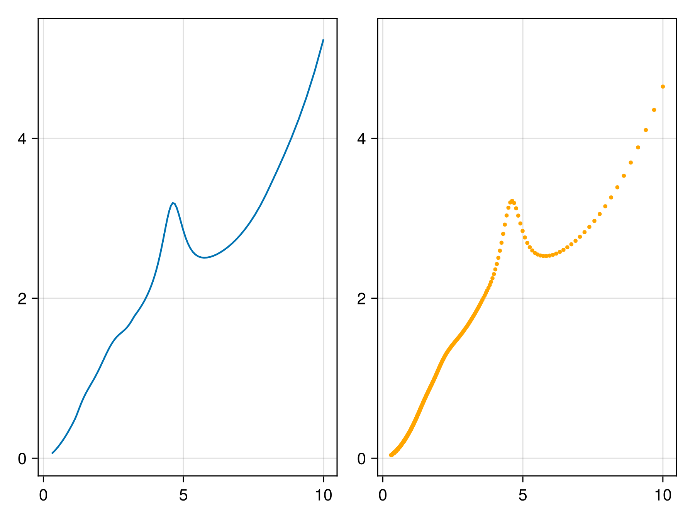
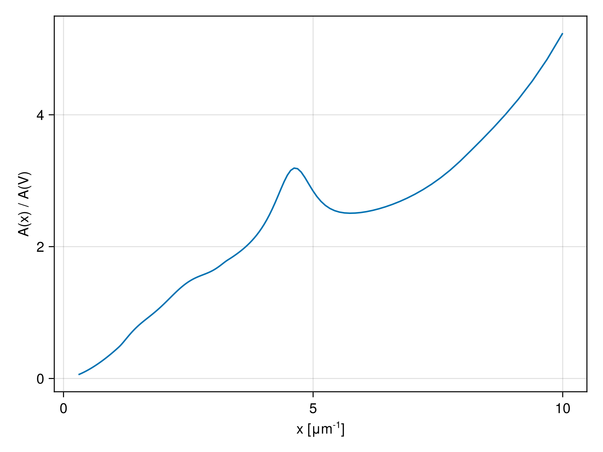
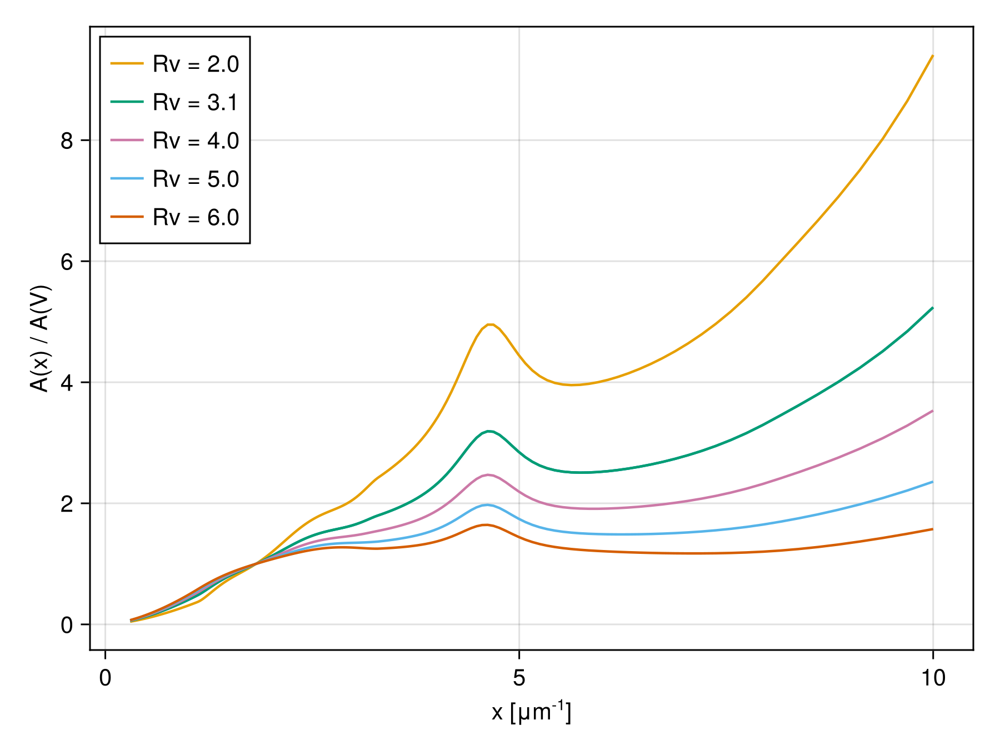
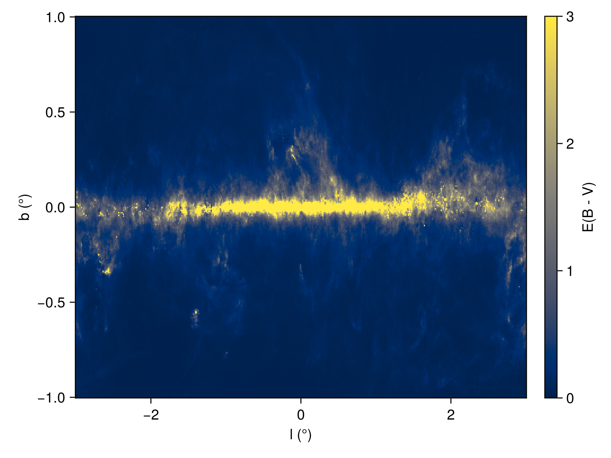

Plotting
DustExtinction.jl supports Makie.jl plots and provides the following recipes for visualizing color laws and dust maps.
Building blocks
Makie's line and scatter plots work out-of-the box for all color laws, which can then be used to build up more complex plots.
using DustExtinction, CairoMakie
fig, ax1, p1 = lines(CCM89())
ax2, p2 = scatter(fig[1, 2], F04(); color=:orange, markersize=5)
linkaxes!(ax1, ax2)
fig
Parameter average models
For more complete plots that include automatic axis labels and legends, use lplot.
using DustExtinction, CairoMakie
lplot(CCM89())
using DustExtinction, CairoMakie
lplot(CCM89)
Shape models
Mixture models
Dust maps
using DustExtinction
using CairoMakie
dplot()
See Color laws and Dust Maps for more usage examples.
API/Reference
DustExtinction.lplot — Functionlplot(law::ExtinctionLaw; args...)Color law plot with automatic axis labels.
lplot(law::Type{<:ExtinctionLaw}; args...)Color law series plot with automatic axis labels.
DustExtinction.dplot — Functiondplot(dustmap=SFD98Map(); lrange=(-3, 3), brange=(-1, 1))Plot a heatmap of the given dustmap, with galactic longitude $(l)$ on the x-axis and galactic latitude $(b)$ on the y-axis. Angles are displayed in degrees by default. The plot axis ranges for both are set by lrange and brange, respectively.